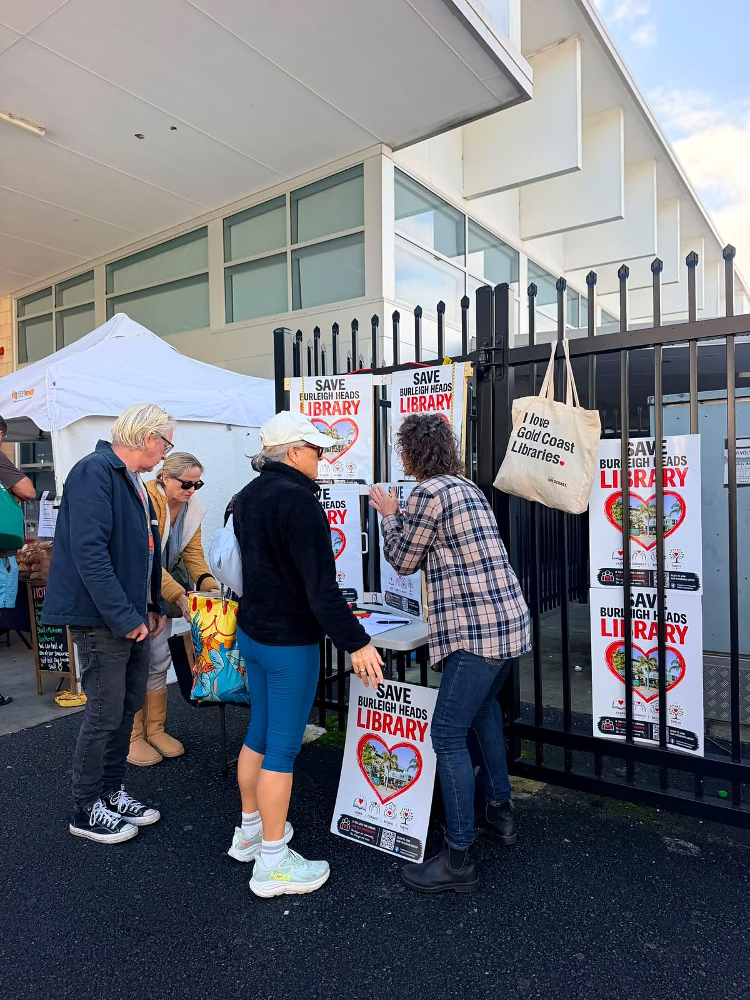

About the campaign
A library the community wasn't consulted about losing
Here's what's happened and what council has said.
What council decided
Council adopted the decision on 2 April 2026, as part of budget and service planning for its Libraries, Arts and Customer portfolio, without community consultation — council says consultation wasn't required for a decision of this kind. Library services move to Burleigh Waters, and the Burleigh Heads building becomes an arts and cultural hub. Council's central justification is visitation: Burleigh Heads recorded the lowest visitation in the Gold Coast Libraries network, about 34% below Burleigh Waters and 87% below Southport, contributing roughly 2.4% of network-wide visits over 2022–23 to 2025–26.
The decision was announced on 11 June, and services were wound back straight away: hours cut 32% (44 to 30 a week), Saturday opening scrapped, collections reduced, the children's literacy program replaced with occasional arts activities elsewhere, and signage removed from the building ahead of a planned 24 July closure.
Council's plan for the two sites
Library services consolidate at Burleigh Waters, 3.4km away — with a larger children's area, a dedicated parents' room, Saturday hours, a new on-site Customer Service Centre, Australia Post lockers, a 8,000-item Mobile Library, and a Home Library Service delivering monthly to those who can't visit in person. Burleigh Heads keeps its 24-hour returns chute and becomes home to youth and community arts programs, including the Level Up Youth Visual Arts and Residency Program.
The case against closure
Comparing branches on citywide visitation share doesn't establish that Burleigh Heads doesn't need a library — every suburb can't be the busiest one, and that measurement window overlaps with years of Light Rail Stage 3 construction disruption through the village centre, the same disruption that plausibly suppressed the numbers being used to justify closing it. Council had previously planned to extend library services at Burleigh Heads under its own Place Making Plan; that plan appears to have been quietly dropped rather than debated.
Burleigh Waters isn't a like-for-like replacement. It's 3.4km away — enough to break the walk-to-the-library habit for families, older residents and kids who currently do it on foot from the village centre, opposite the beach and near schools, shops and transport. And the timing cuts the wrong way: Light Rail Stage 3 has just reached Burleigh Heads, which would make it the only public library on the Gold Coast directly on the line — exactly the kind of higher-density, transit-connected corridor the city's own growth strategy is meant to build around, not strip infrastructure from.
Council has also pointed to "incidents of aggressive behaviour from some members of the community" as part of its reasoning for the closure timing. Organisers reject any link between that claim and the campaign, which has drawn thousands of petition signatures, hundreds of attendees at family-friendly gatherings, and public support from local business and elected representatives — consistently under a message to stay respectful.
Questions still unanswered
Despite repeated, specific requests to council, these remain open:
- Why was there no community consultation before closing a long-established public library?
- Where is the business case, utilisation analysis and financial modelling behind the decision?
- What evidence — incident numbers, dates, locations, police involvement — supports the "aggressive behaviour" claim, and was it actually put to councillors before they voted?
- Was the impact of the light rail's arrival on future library demand assessed at all?
- Why was the Burleigh Heads Place Making Plan, which proposed extending library services, not followed?
Where it stands now
Councillor Josh Martin, who opposed the closure from the outset, tabled the 3,000+ signature petition to council in late July. Council delayed the closure until the Burleigh Waters upgrade finishes (expected September) and opened a review — but that reprieve comes with reduced hours, space, books and programming, and the decision to eventually close Burleigh Heads has not been reversed.
What we're calling for
The campaign's position, in full:
- Keeping Burleigh Heads Library open, permanently
- Accessible, multi-generational public spaces
- The 2023 Burleigh Heads Business Centre Master Plan being followed, not ignored
- Walkable neighbourhoods
- Third spaces in a city of villages
The Gold Coast calls itself a city that says yes. On this, council has told residents no — and we're saying yes anyway.
Who's involved
Coordinated by residents of Burleigh Heads and the surrounding area, with support from Burleigh MP Hermann Vorster and Cr Josh Martin. That's deliberate: the library serves a whole catchment, not just the streets immediately around it. The library itself turns 60 next year.

A note on accuracy
This page summarises publicly reported facts about the closure decision and the campaign response. If anything here is out of date or needs correcting, please get in touch — we'd rather fix it than leave it wrong.
Want to help keep the pressure on?
There's more than one way to make your voice heard.